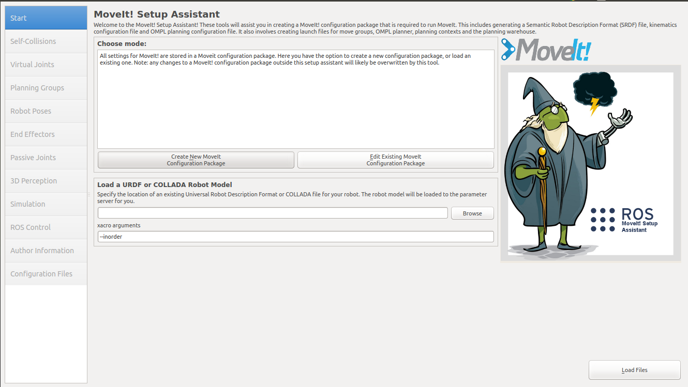
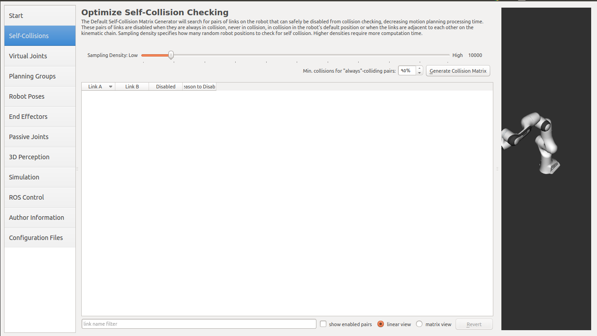
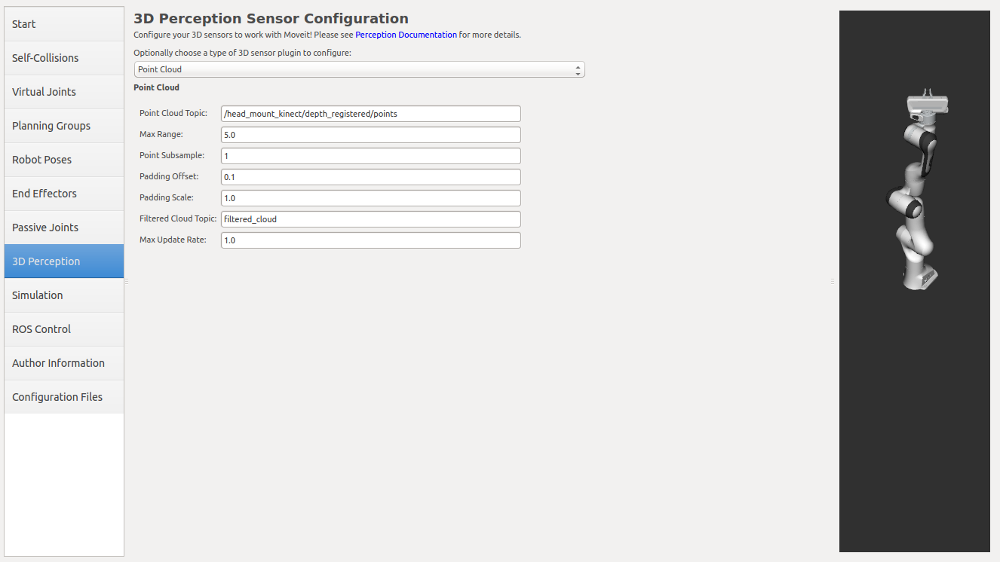
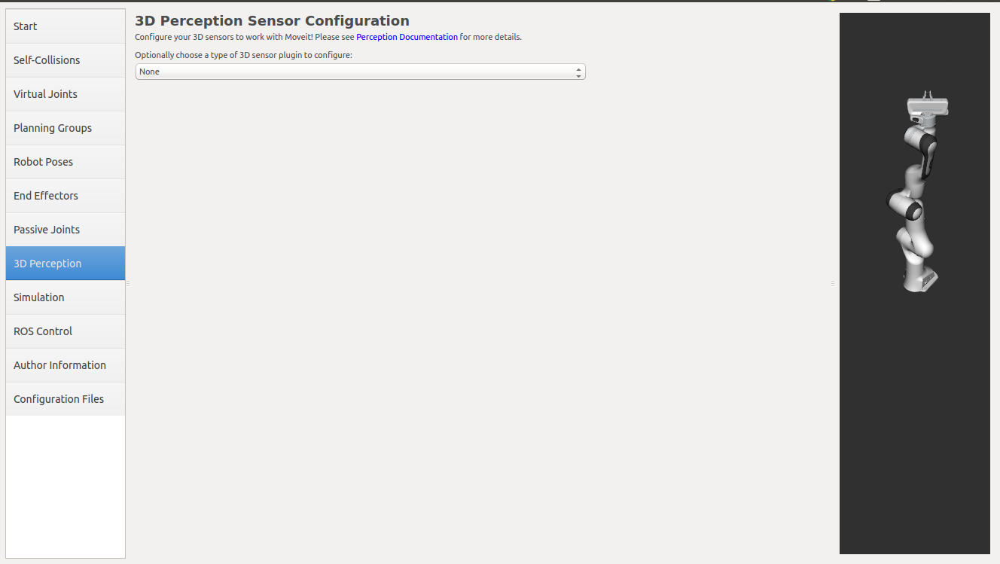
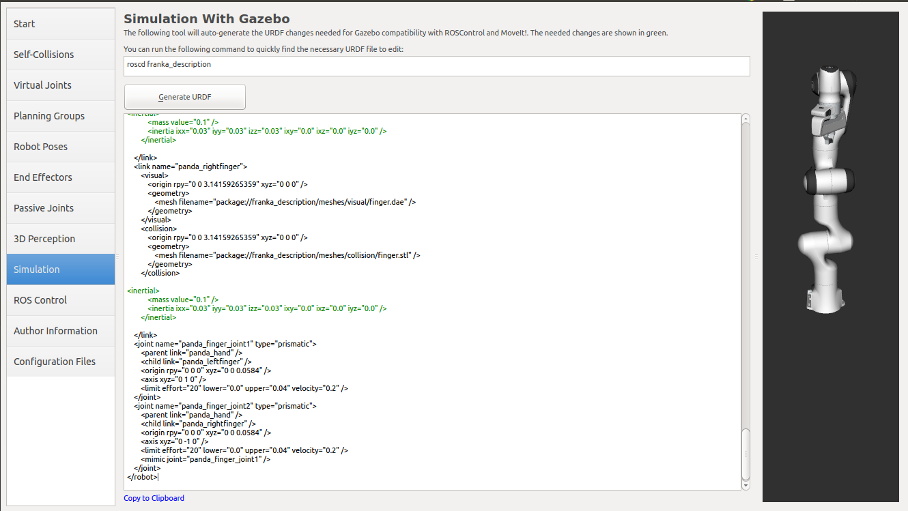

MoveIt Setup Assistant
{kind=link}
Overview
The MoveIt Setup Assistant is a graphical user interface for configuring any robot for use with MoveIt. Its primary function is generating a Semantic Robot Description Format (SRDF) file for your robot. Additionally, it generates other necessary configuration files for use with the MoveIt pipeline. To learn more about the SRDF, you can go through the URDF/SRDF Overview page.
Getting Started
MoveIt and ROS
Follow the instructions for installing MoveIt first if you have not already done that.
If you haven’t already done so, make sure you have the Franka description package for Noetic:
sudo apt install ros-noetic-franka-description
If you have the
panda_moveit_configpackage already git-cloned from the Getting Started page, be sure to delete that now since this tutorial will teach you how to create it from scratch:cd ~/ws_moveit/src rm -rf panda_moveit_config catkin clean panda_moveit_config
Step 1: Start
To start the MoveIt Setup Assistant:
roslaunch moveit_setup_assistant setup_assistant.launch
This will bring up the start screen with two choices: Create New MoveIt Configuration Package or Edit Existing MoveIt Configuration Package.
Click on the Create New MoveIt Configuration Package button to bring up the following screen:
Click on the browse button and navigate to the panda_arm_hand.urdf.xacro file installed when you installed the Franka package above. (This file gets installed in /opt/ros/noetic/share/franka_description/robots/panda_arm_hand.urdf.xacro on Ubuntu with ROS Noetic.) Choose that file and then click Load Files. The Setup Assistant will load the files (this might take a few seconds) and present you with this screen:
{kind=link}
Step 2: Generate Self-Collision Matrix
The Default Self-Collision Matrix Generator searches for pairs of links on the robot that can safely be disabled from collision checking, decreasing motion planning processing time. These pairs of links are disabled when they are always in collision, never in collision, in collision in the robot’s default position or when the links are adjacent to each other on the kinematic chain. The sampling density specifies how many random robot positions to check for self collision. Higher densities require more computation time while lower densities have a higher possibility of disabling pairs that should not be disabled. The default value is 10,000 collision checks. Collision checking is done in parallel to decrease processing time.
Click on the Self-Collisions pane selector on the left-hand side and click on the Generate Collision Matrix button. The Setup Assistant will work for a few second before presenting you the results of its computation in the main table.
 → 
{kind=link}
Step 3: Add Virtual Joints
Virtual joints are used primarily to attach the robot to the world. For the Panda we will define only one virtual joint attaching the panda_link0 of the Panda to the world world frame. This virtual joint represents the motion of the base of the robot in a plane.
Click on the Virtual Joints pane selector. Click on Add Virtual Joint
Set the joint name as “virtual_joint”
Set the child link as “panda_link0” and the parent frame name as “world”.
Set the Joint Type as “fixed”.
Click Save and you should see this screen:
{kind=link}
Step 4: Add Planning Groups
Planning groups are used for semantically describing different parts of your robot, such as defining what an arm is, or an end effector.
Click on the Planning Groups pane selector.
Click on Add Group and you should see the following screen:
{kind=link}
Add the arm
We will first add Panda arm as a planning group
Enter Group Name as panda_arm
Choose kdl_kinematics_plugin/KDLKinematicsPlugin as the kinematics solver. Note: if you have a custom robot and would like a powerful custom IK solver, see Kinematics/IKFast
Let Kin. Search Resolution and Kin. Search Timeout stay at their default values.
{kind=link}
Now, click on the Add Joints button. You will see a list of joints on the left hand side. You need to choose all the joints that belong to the arm and add them to the right hand side. The joints are arranged in the order that they are stored in an internal tree structure. This makes it easy to select a serial chain of joints.
Click on virtual_joint, hold down the Shift button on your keyboard and then click on the panda_joint8. Now click on the > button to add these joints into the list of selected joints on the right.
{kind=link}
Click Save to save the selected group.
{kind=link}
Add the gripper
We will also add a group for the end effector. NOTE that you will do this using a different procedure than adding the arm.
Click on the Add Group button.
Enter Group Name as hand
Let Kinematic Solver stay at its default value; None.
Let Kin. Search Resolution and Kin. Search Timeout stay at their default values.
Click on the Add Links button.
Choose panda_hand, panda_leftfinger, and panda_rightfinger and add them to the list of Selected Links on the right hand side.
Click Save
{kind=link}
Step 5: Add Robot Poses
The Setup Assistant allows you to add certain fixed poses into the configuration. This helps if, for example, you want to define a certain position of the robot as a Home position.
Click on the Robot Poses pane.
Click Add Pose. Choose a name for the pose. The robot will be in its Default position where the joint values are set to the mid-range of the allowed joint value range. Move the individual joints around until you are happy and then Save the pose. Note how poses are associated with particular groups. You can save individual poses for each group.
IMPORTANT TIP: Try to move all the joints around. If there is something wrong with the joint limits in your URDF, you should be able to see it immediately here.
{kind=link}
Step 6: Label End Effectors
We have already added the gripper of the Panda. Now, we will designate this group as a special group: end effectors. Designating this group as end effectors allows some special operations to happen on them internally.
Click on the End Effectors pane.
Click Add End Effector.
Choose hand as the End Effector Name for the gripper.
Select hand as the End Effector Group.
Select panda_link8 as the Parent Link for this end-effector.
Leave Parent Group blank.
{kind=link}
Step 7: Add Passive Joints
The passive joints tab is meant to allow specification of any passive joints that might exist in a robot. These are joints that are unactuated on a robot (e.g. passive casters.) This tells the planners that they cannot (kinematically) plan for these joints because they can’t be directly controlled. The Panda does not have any passive joints so we will skip this step.
Step 8: 3D Perception
The 3D Perception tab is meant to set the parameters of the YAML configuration file for configuring the 3D sensors sensors_3d.yaml.
e.g. point_cloud parameters:
{kind=link}
For more details about those parameters please see perception pipeline tutorial
In case of sensors_3d.yaml was not needed, choose None.
{kind=link}
Step 9: Gazebo Simulation
The Simulation tab can be used to help you simulate your robot with Gazebo by generating a new Gazebo compatible urdf if needed.
{kind=link}
You can use the generated robot urdf to spawn the robot in Gazebo in the following way.
Use rosrun to start gazebo empty world:
roslaunch gazebo_ros empty_world.launch paused:=true use_sim_time:=false gui:=true throttled:=false recording:=false debug:=true
Use rosrun to spawn the robot:
rosrun gazebo_ros spawn_model -file </path_to_new_urdf/file_name.urdf> -urdf -x 0 -y 0 -z 1 -model panda
{kind=link}
Step 10: ROS Control
ROS Control is a set of packages that include controller interfaces, controller managers, transmissions and hardware_interfaces, for more details please look at ros_control documentation
ROS Control tab can be used to auto generate simulated controllers to actuate the joints of your robot. This will allow us to provide the correct ROS interfaces MoveIt.
Click on the ROS Control pane selector.
{kind=link}
Click on Add Controller and you should see the following screen:
We will first add Panda arm position controller
Enter Controller Name as arm_position_controller
Choose position_controllers/JointPositionController as the controller type
Next you have to choose this controller joints, you can add joints individually or add all the joints in a planning group all together.
Now, click on Add Planning Group Joints.
{kind=link}
Choose panda_arm planning group to add all the joints in that group to the arm controller.
{kind=link}
Click Save to save the selected controller.
Step 11: Add Author Information
Catkin requires author information for publishing purposes
Click on the Author Information pane.
Enter your name and email address.
Step 12: Generate Configuration Files
You are almost there. One last step - generating all the configuration files that you will need to start using MoveIt
Click on the Configuration Files pane. Choose a location and name for the ROS package that will be generated containing your new set of configuration files. Click browse, select a good location (for example, your home directory), click Create New Folder, call it “panda_moveit_config”, and click Choose. “panda_moveit_config” is the location used in the rest of the documentation on this wiki. This package does not have to be within your ROS package path. All generated files will go directly into the directory you have chosen.
Click on the Generate Package button. The Setup Assistant will now generate and write a set of launch and config files into the directory of your choosing. All the generated files will appear in the Generated Files/Folders tab and you can click on each of them for a description of what they contain.
{kind=link}
Congratulations!! - You are now done generating the configuration files you need for MoveIt
What’s Next
The MoveIt RViz plugin
Start looking at how you can use the generated configuration files to play with MoveIt using the MoveIt RViz Plugin.
Setup IKFast Inverse Kinematics Solver
A faster IK solver than the default KDL solver, but takes some additional steps to setup: Kinematics/IKFast
Additional Reading
See the URDF and SRDF page for more details on the components of the URDF and SRDF mentioned in this tutorial.